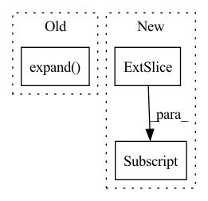

Pattern ID :3212
Before Change
x = x.unsqueeze(-1)
x = self.project_to_steps(x) // BxCxTxS
x = self.dropout(x)
x = x.unsqueeze(0).expand( targets.size(0), -1, -1, -1, -1)
copies, bsz, dim, tsz, steps = x.shape
steps = min(steps, tsz - self.offset)
predictions = x.new(bsz * copies * (tsz - self.offset + 1) * steps - ((steps + 1) * steps // 2) * copies * bsz)After Change
else:
pos_num = (end - start) // copies
predictions[start:end] = torch.einsum(
"bct,nbct->nbt", x[..., :-offset, i], targets[..., offset:]
).flatten()
labels[start : start + pos_num] = 1.0
if weights is not None:
weights[start : start + pos_num] = 1.0In pattern: SUPERPATTERN
Frequency: 4
Non-data size: 3
Instances Fragment ID: 10246184
Project Name: kssteven418/i-bert
Commit Name: 3335de5f441ee1b3824e16dcd98db620e40beaba
Time: 2020-02-29
Author: alexei.b@gmail.com
File Name: fairseq/models/wav2vec.py
M Class Name: Wav2VecPredictionsModel
N Class Name: Wav2VecPredictionsModel
M Method Name: forward(3)
N Method Name: forward(3)
M Parent Class: nn.Module
N Parent Class: nn.Module
M File Name: fairseq/models/wav2vec.py
N File Name: fairseq/models/wav2vec.py
M Start Line: 411
M End Line: 439
N Start Line: 638
N End Line: 691
Before Change
g_t = torch.softmax(g_t, dim=-1) / sig_t + self.eps
// each B x K x T_in
g_t = g_t.unsqueeze(2).expand( g_t.size(0),
g_t.size(1),
inputs.size(1))
sig_t = sig_t.unsqueeze(2).expand_as(g_t)
mu_t_ = mu_t.unsqueeze(2).expand_as(g_t)
j = self.J[:g_t.size(0), :, :inputs.size(1)]
After Change
// discritize attention weights
alpha_t = self.COEF * torch.sum(phi_t, 1)
alpha_t = alpha_t[:, 1:] - alpha_t[:, :-1]
// apply masking
if mask is not None: Fragment ID: 10246181
Project Name: coqui-ai/tts
Commit Name: 5e148038be5971f2c7c811d46a1d7b28c759ecda
Time: 2020-01-09
Author: root@sp-mlc3-5423-0.mlc
File Name: layers/common_layers.py
M Class Name: GravesAttention
N Class Name: GravesAttention
M Method Name: forward(5)
N Method Name: forward(5)
M Parent Class: nn.Module
N Parent Class: nn.Module
M File Name: layers/common_layers.py
N File Name: layers/common_layers.py
M Start Line: 162
M End Line: 176
N Start Line: 162
N End Line: 174
Before Change
batch_size, max_num_atoms, _ = h.size()
h = self.node_gnn(h, pos_enc,mask)
readout_query = self.readout_query[None, None, :].expand( (batch_size, -1, -1))
// pooled: [batch_size, 1, hidden_dim]
pooled, attention_weights = self.readout_attention(readout_query, h, h, key_padding_mask=mask)
pooled = pooled.squeeze() // pooled: [batch_size, hidden_dim]
return self.output(pooled)After Change
h = self.node_gnn(h, pos_enc, mask) // [batch_size, max_num_atoms + 1, hidden_dim]
// the first node is the one that was added for readout
return self.output(h[:,0,:] )
class TransformerGNN(nn.Module): Fragment ID: 10246182
Project Name: hannesstark/3dinfomax
Commit Name: a165907548f15c7571758457fe0867a83ad049dc
Time: 2021-07-03
Author: hannes.staerk@gmail.com
File Name: models/transformer.py
M Class Name: TransformerPlain
N Class Name: TransformerPlain
M Method Name: forward(4)
N Method Name: forward(4)
M Parent Class: nn.Module
N Parent Class: nn.Module
M File Name: models/transformer.py
N File Name: models/transformer.py
M Start Line: 51
M End Line: 57
N Start Line: 40
N End Line: 43